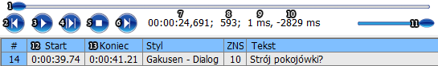
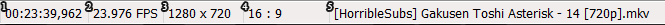
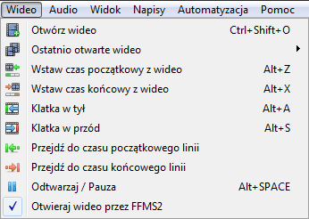
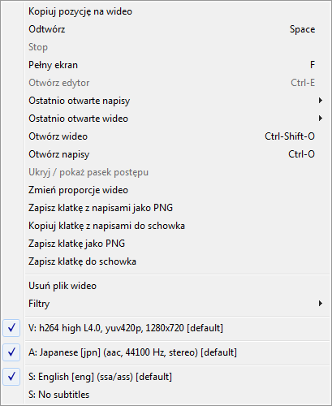

Praca z wideo
Praca z wideo
W Kainote wideo można otworzyć zarówno przez FFMS2, wykorzystując indeksowanie aby uzyskać dokładność klatkową, bądź przez direct show poprzez kodeki zainstalowane na komputerze (bez indeksowania i spektrum audio).
Przełączać między tymi trybami w głównym menu Wideo -> Otwieraj wideo przez FFMS2.
Odnośnie Direct Show, to domyślnie na Windows 7 i wyższych wszelakie wideo w formacie h264 / Xvid / Divx itd otwiera wykorzystując windowsowski kodek, którzy przy h264 odtwarza wideo z użyciem dxva, które nie jest wspierane przez Kainote ponieważ renderowanie odbywa się bez użycia renderera wideo, a robi to sam kodek, więc nie ma wtedy możliwości wrysowania napisów. Wtedy albo w ogóle nie chce wczytać wideo bądź wyświetla zielony / różowy obraz bez możliwości odtwarzania, zmienić to można, instalując Win7DSFilterTweaker i zmieniając w nim kodek h264 na inny niż Microsoft.
Panel sterowania wideo składa się z następujących elementów (1-11):

- Suwak wideo, ustawia pozycję wideo, najechanie myszką na linię suwaka powoduje wyświetlenie czasu w którym zostanie wyświetlone wideo, gdy przestawimy tam suwak.
- Wczytuje poprzednie wideo w katalogu.
- Odtwarzanie / pauza, wygląd przycisku automatycznie się zmienia w zależności od stanu wideo.
- Odtwarzanie aktywnej linijki (zaznaczonej czerwoną obwódką w polu napisów).
- Stopuje wideo przechodząc do początku wideo.
- Wczytuje następne wideo w katalogu.
- Czas wideo.
- Klatka wideo (tylko przy wideo wczytanym przez FFMS2).
- Różnica między czasem początkowym (12), a czasem wideo w milisekundach.
- Różnica między czasem końcowym (13), a czasem wideo w milisekundach.
- Suwak głośności przydaje się, gdy nie mamy wczytanego audio, wczytane audio ma większe możliwości zmiany głośności.
Pasek statusu wyświetla następujące informacje o wczytanym wideo:

- Czas trwania wideo.
- FPS, w przypadku wideo o zmiennym FPS, FFMS2 pokazuje średni FPS, a DirectShow zaokrągla go do podstawowych wartości.
- Rozdzielczość wideo.
- Aspect Ratio w przypadku DirectShow dostaję już zaokrąglone wartości np 4:3 czy 16:9, ale w przypadku FFMS2 dostaję tylko numerator i denumerator przez które należy podzielić/pomnożyć jedną z wartości rozdzielczości, w przyszłości może napiszę algorytm do obliczania Aspect Ratio by ładnie to wyświetlało.
- Nazwa pliku wideo.
Menu główne wideo składa się z następujących elementów:

Otwórz wideo - włącza okno wyboru wideo.
Ostatnio otwarte wideo - wyświetla listę ostatnio otwartego wideo (pliki nieistniejące są automatycznie kasowane).
Wstaw czas początkowy z wideo - ustawia czas wideo jako czas początkowy zaznaczonych linii. (dodaje pół klatki by czas był pomiędzy klatkami a nie na samym początku klatki, co mogłoby spowodować niekiedy złe wyświetlanie na wideo).
Wstaw czas początkowy z wideo - ustawia czas wideo jako czas końcowy zaznaczonych linii. (odejmuje pół klatki by czas był pomiędzy klatkami a nie na samym początku klatki, co mogłoby spowodować niekiedy złe wyświetlanie na wideo).
Klatka w tył - przechodzi w tył o jedną klatkę.
Klatka w przód - przechodzi w przód o jedną klatkę.
Przejdź do czasu początkowego linii - ustawia na wideo czas początkowy linii, to samo co dwukrotne kliknięcie na linii wszędzie oprócz czasu końcowego.
Przejdź do czasu końcowego linii - ustawia na wideo czas końcowy linii, to samo co dwukrotne kliknięcie na czasie końcowym.
Pauza - pauzuje wideo.
Odtwarzaj - włącza odtwarzanie wideo.
Otwieraj wideo przez FFMS2 - odhaczona wczytuje wideo przez DirectShow (bez spektrum audio i klatek kluczowych). Zahaczenie powoduje wczytywanie wideo przez FfmpegSource2, tworzy index i wczytuje od razu spektrum audio.
Menu okna wideo składa się z następujących elementów:

Kopiuj pozycję na wideo - kopiuje do schowka koordynaty wykorzystywane do pozycjonowania tekstu czy do clipów.
Odtwórz - odtwarza wczytane wideo.
Stop - zatrzymuje odtwarzanie.
Pełny ekran - Włącza wideo na pełnym ekranie alternatywnie można używać dwukrotnego kliknięcia na wideo.
Otwórz edytor - włącza edytor, gdy jest wyłączony, bądź przechodzi do niego z pełnego ekranu.
Ostatnio otwarte napisy - wyświetla listę ostatnio otwartych napisów (pliki nieistniejące są automatycznie kasowane).
Ostatnio otwarte wideo - wyświetla listę ostatnio otwartego wideo (pliki nieistniejące są automatycznie kasowane).
Otwórz napisy - włącza okno wyboru napisów.
Otwórz wideo - włącza okno wyboru wideo.
Ukryj / pokaż pasek postępu - opcja działa tylko na pełnym ekranie, pokazuje / ukrywa pasek postępu w prawym górnym rogu ekranu.
Zmień proporcje wideo - (eksperymentalne) zmienia aspect ratio wideo.
Zapisz klatkę z napisami jako PNG - Zapisuje aktualną klatkę z napisami w formacie PNG do folderu z wideo.
Zapisz klatkę z napisami do schowka - Zapisuje aktualną klatkę z napisami do schowka. (format w schowku prawdopodobnie BMP bo i tak reszta zależy od programu który tę klatkę przechwyci.)
Zapisz klatkę jako PNG - Zapisuje aktualną klatkę z bez napisów w formacie PNG do folderu z wideo.
Zapisz klatkę do schowka - Zapisuje aktualną klatkę bez napisów do schowka.
Usuń plik wideo - przenosi plik wideo do kosza i otwiera następny w katalogu.
Filtry - wyświetla listę użytych filtrów z możliwością otworzenia ich konfiguracji, gdy taką posiadają.
- Pokazuje użyte ścieżki: wideo, audio i napisy z możliwością wybrania, wybieranie napisy działa tylko przy wyłączonym edytorze, a przy włączonym wczytuje zawsze napisy z edytora.
- Lista rozdziałów z możliwością wybrania konkretnego rozdziału, można to zrobić, także korzystając z przycisków "M" i "N", gdy aktywne jest okno wideo.
Created with the Personal Edition of HelpNDoc: Benefits of a Help Authoring Tool